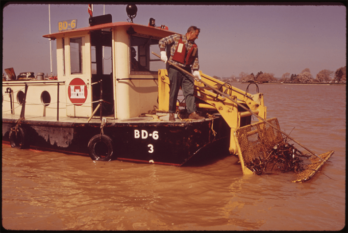

Last month, what may be the country’s largest sewage spill in history contaminated a stretch of the Potomac River in the Washington, D.C., area with hundreds of gallons of human waste. Now, President Donald Trump claims that local politicians, including Maryland Governor Wes Moore, caused the disaster and botched the cleanup.
But the leak came from a sewage pipeline that’s regulated by the federal government. Full repairs are expected to take up to 10 months, according to DC Water, the utility that operates the pipeline.
The Potomac River is no stranger to contamination—people have polluted its winding waters for centuries.
Before settlers arrived to the area, the Indigenous Patawomeck and Piscataway people relied on the pristine Potomac River for fishing, drinking, and bathing. President George Washington later eyed the river as a shipping network, and helped organize the Potomac Company in 1785 to make it more easily navigable and connect it with the rest of the nascent country. A few years later, Congress passed the Residence Act, which called on Washington to choose a spot on the Potomac for the country’s new capital.

RIVER REVIVAL: The U.S. Army Corps of Engineers assisted in cleaning up the Potomac and Anacostia Rivers in 1973. Credit: U.S. National Archives and Records Administration / Wikimedia Commons.
Washington described the Potomac around that time as “well-stocked with various kinds of fish at all seasons of the year, and in the Spring with Shad, Herrings, Bass, Carp, Perch, Sturgeon, etc. in great abundance.” It was reportedly difficult to throw a spear in the water without catching a fish. Meanwhile, tobacco plantations had cropped up along the river, and the port city of Alexandria became a hub for the trade of tobacco for enslaved people and goods.
It didn’t take long for people to pollute the Potomac. By the early 19th century, agriculture and deforestation caused silt to build up in the river. This water grew dirtier as the area’s population swelled during the Civil War and nearby mining ramped up—this runoff turns water highly acidic and makes it unsuitable for wildlife.
Beginning in 1810, D.C.’s early sewage system sent untreated stormwater and sewage into local waterways like the Potomac without treating it. In 1894, the U.S. Public Health Service noted that, “at certain times of the year the river is so loaded with sediments as to be unfit for bathing as well as drinking and cooking purpose. It contains fecal bacilli at all times.”
Read more: “The Dam Problem in the West”
Such conditions prompted the U.S. Public Health Service to begin conducting sanitary surveys of the river. D.C.’s drinking water, which was diverted from the Potomac, sparked outbreaks of typhoid fever around the turn of the century. By 1932, untreated waste from 575,000 people was streaming into the Potomac around D.C., and bacterial contamination forced officials to close off a stretch of the river to swimmers. Parts of the Potomac were also found to contain low levels of dissolved oxygen, threatening fish.
It wasn’t until 1938 that a sewage treatment plant opened in the D.C. area. But the Blue Plains plant only offered primary treatment at the time—more advanced treatment wouldn’t arrive for several decades. Further population growth around World War II strained the plant, and around a third more pollution made its way to the river than before Blue Plains was constructed.
A watershed moment arrived in the 1950s and ’60s with federal legislation including the Water Quality Act of 1965, which set water quality standards for interstate waters like the Potomac. Around that time, according to President Lyndon B. Johnson, the Potomac was “a river of decaying sewage and rotten algae.” A few years later, the federal Clean Water Act required the regulation of sources of pollution into the country’s waters.
In the following decades, the Potomac showed signs of a rebound, including a dip in outbreaks of algae, rising numbers of certain fish species, and the reappearance of water grasses. Unfortunately, this progress reached a plateau around a decade ago.
Today, the Potomac’s top pollutants—nitrogen, phosphorus, and sediment—continue to decline. But some native fish populations are decreasing, and deforestation and extreme weather contribute to a rise in urban runoff.
The Potomac still remains unsafe for fishing and swimming, activities enjoyed by Indigenous communities for millennia before settlers made their way to the area. And the consequences of the recent sewage spill could stick around for months: As temperatures warm, people spending time in the river might still encounter bacteria released by the recent disaster that are currently trapped in ice. 
Enjoying Nautilus? Subscribe to our free newsletter.
Lead image: U.S. National Archives and Records Administration / Wikimedia Commons